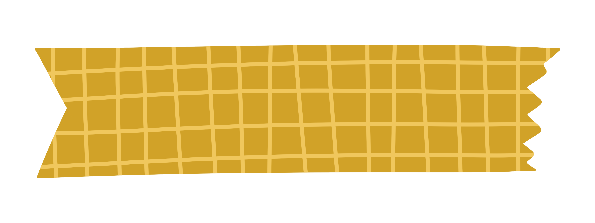
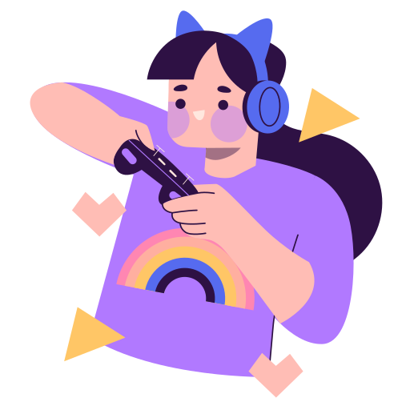

Ciao!
Sono Noemi -
UI/UX Designer
Creare per me non è solo un atto artistico, ma una forma di comunicazione: un dialogo con gli utenti, attraverso l'interfaccia grafica di app e siti web, lasciando un'impronta positiva nella vita di chi li utilizza. Questa, è la mia sfida quotidiana.

Chi sono
"Every puzzle has an answer!"
Il mio viaggio è stato guidato dalla passione nel trovare soluzioni creative e funzionali, una passione che ha radici sin da quando, a soli 9 anni, ho iniziato ad immergermi nel mondo degli enigmi e misteri giocando al Professor Layton. Quel gioco ha scatenato il desiderio di risolvere problemie di creare connessioni significative, una passione che ha trovato il suo sfogonella progettazione di interfacce. Oggi, sono pronta a portare la mia passione e le mie competenze nel mondo del lavoro, con l'obiettivo di creare esperienze che siano non solo funzionali ma anche memorabili. Sono entusiasta di continuare a imparare, crescere e collaborare con coloro che condividono la mia visione di un design centrato sull'utente. 
La mia avventura nel mondo del design è iniziata nel 2020 quando, in piena pandemia, ho scoperto la magia della User Experience guardando una diretta in un canale di Twitch. Durante il mio percorsoformativo, ho avuto il privilegio di immergermi completamente nella progettazione di interfacce, esplorando la fusione armoniosa tra UX e UI. I progetti che ho affrontato, soprattutto durante il mio master, non solo hanno arricchito le mie competenze, ma hanno anche alimentato il mio desiderio di trasformare le sfide in opportunità. Trovo una grande soddisfazionenel convertire i "pain points" dei servizi in punti di forza, un processo che mi ricorda l'emozione di risolvere enigmi complicati da bambina.
